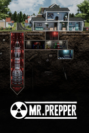

Mr. Prepper
Detalles
|  | |
| Tiempo de juego | No Jugado |
| Última actividad | Nunca |
| Añadido | 11/13/2024 0:35:38 |
| Modificado | 11/13/2024 1:06:09 |
| Estado de finalización | No Jugado |
| Librería | Playnite |
| Fuente | PORCHE |
| Plataforma | PC (Windows) |
| Fecha de lanzamiento | 3/18/2021 |
| Puntuación de la Comunidad | 78 |
| Puntuación de la Crítica | |
| Puntuación de usuario | |
| Género | Acción Aventura Casual Indie Rol Simuladores |
| Desarrollador | Rejected Games |
| Editor | PlayWay S.A. Rejected Games |
| Característica | Cloud Saves Estadísticas Incluye Editor De Niveles Logros De Préstamo Familiar Remote Play En Tableta Subtítulos Disponibles Un Jugador |
| Enlaces | Punto de encuentro Discusiones Guías Noticias Página de la tienda PCGamingWiki Logros |
| Tag | 2.5D Acción Ambientales Apuntar y clic Aventura Casuales Construcción de bases Economía Exploración Fabricación Gestión Gestión de recursos Indie Realistas Rol Simulación Simulador de vida Subterráneos Supervivencia Un jugador |
Descripción
Mr. Prepper va de estar preparado. Sabes que algo va mal, el riesgo de una guerra nuclear se siente en el aire y necesitas prepararte para lo que se avecina. Te prometieron libertad pero tratar con tu paranoico gobierno es un día más en este juego de supervivencia;

- Construye un refugio subterráneo
- Fabrica máquinas que te ayuden a mantenerte con vida: granjas, invernaderos, herramientas, vehículos etc.
- Comercia con tus vecinos, dales lo que necesiten y consigue cosas útiles para ti.
- Elabora un plan, algo tiene que hacerse
- Ten cuidado con la policía secreta, no quieren que te prepares, quieren que permanezcas bajo su control.

Mr. Prepper es el hombre que vive en el país que una vez fue la tierra de la libertad pero poco a poco el gobierno fue cambiando todo. Si no obedeces, desaparecerás. Se como quieren que seas o te irás. Nuestro héroe ha decidido oponerse, salir de este engaño de vida. La única forma de esconder sus planes y lo que hace es construir un refugio subterráneo y una máquina que le ayude a cambiar esta situación. Pero necesitará materiales, y los materiales son raros en este mundo, tendrás que ayudarle a conseguirlos y ayudarle a romper el status quo.
- Elabora
- Comercia
- Sobrevive
- Asume el control